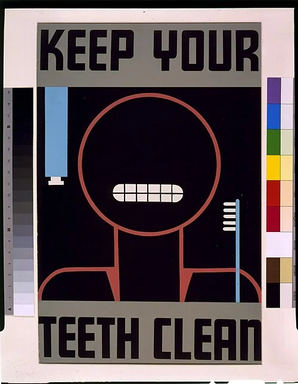
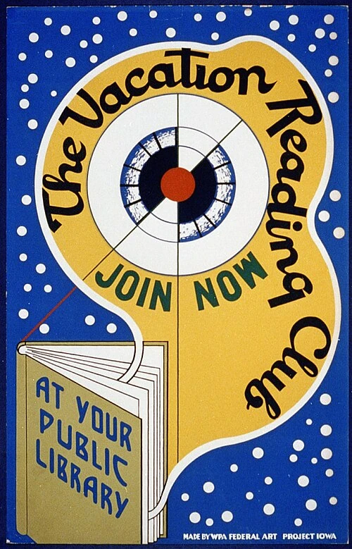
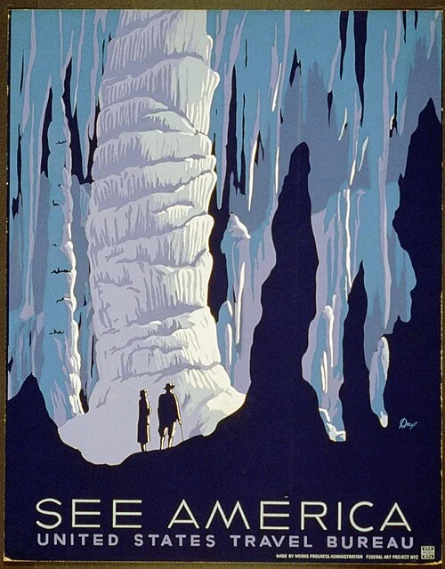
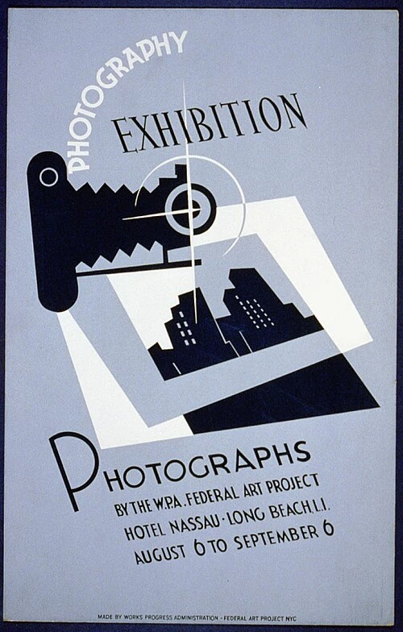

見どころ
黒い丸顔の中央で、白い歯だけが浮かびます。左右に一本ずつ立てた歯ブラシとチューブも、簡潔な輪郭だけで見分けられます。
作品・制作の例7件を紹介しています。実作品画像4点、参照・関連画像0点。画像の収集は継続中です。
技法・制作方法
Silkscreen
細かな網を通して、インクを紙や布に押し出します。インクを通す所と通さない所をつくることで、同じ形を何枚も刷れます。シルクスクリーンは、このような印刷の方法です。
実作品を見る

画像を表示できませんでした。下の出典ページで確認できます。
連邦美術計画（ニューヨーク州ロチェスター） / 1936〜1938年
黒い丸顔の中央で、白い歯だけが浮かびます。左右に一本ずつ立てた歯ブラシとチューブも、簡潔な輪郭だけで見分けられます。
連邦美術計画（ニューヨーク州ロチェスター）／Library of Congress, Prints and Photographs Division, WPA Posters（92517367）
出典で作品・資料を見る ↗米国議会図書館の再利用可能資料。個別記録に既知の公開制限なしと記載。
出典先の原画像を開く ↗作品の所蔵・権利情報 ↗画像の利用条件 ↗図版全体を保ち、表示用のWebP画像を作成。
実作品を見る

画像を表示できませんでした。下の出典ページで確認できます。
連邦美術計画（アイオワ州） / 1936〜1939年
開いた本から黄色い帯が伸び、文字がその縁に沿って一周します。本の中へ目を誘う曲線に、青い背景の白い水玉が重なります。
連邦美術計画（アイオワ州）／Library of Congress, Prints and Photographs Division, WPA Posters（98510373）
出典で作品・資料を見る ↗米国議会図書館の再利用可能資料。個別記録に既知の公開制限なしと記載。
出典先の原画像を開く ↗作品の所蔵・権利情報 ↗画像の利用条件 ↗図版全体を保ち、表示用のWebP画像を作成。
実作品を見る

画像を表示できませんでした。下の出典ページで確認できます。
アレクサンダー・デュクス / 1936〜1939年
鍾乳洞の奥を二人が歩いています。重なる岩を数段階の青で刷り分け、小さな人影との対比で洞窟の高さを伝えました。
アレクサンダー・デュクス／Library of Congress, Prints and Photographs Division, WPA Posters（96503125）
出典で作品・資料を見る ↗米国議会図書館の再利用可能資料。個別記録に既知の公開制限なしと記載。
出典先の原画像を開く ↗作品の所蔵・権利情報 ↗画像の利用条件 ↗図版全体を保ち、表示用のWebP画像を作成。
実作品を見る

画像を表示できませんでした。下の出典ページで確認できます。
アンソニー・ヴェロニス / 1941年
左からせり出す黒いカメラに、建物が写った白い印画紙を重ねました。写真展を知らせるポスター自体は、色ごとの版を使った印刷です。
アンソニー・ヴェロニス／Library of Congress, Prints and Photographs Division, WPA Posters（98507251）
出典で作品・資料を見る ↗米国議会図書館の再利用可能資料。個別記録に既知の公開制限なしと記載。
出典先の原画像を開く ↗作品の所蔵・権利情報 ↗画像の利用条件 ↗図版全体を保ち、表示用のWebP画像を作成。
実在する作品・制作物（個別の分野は domain を参照）
同じ人物写真を色を変えて刷ったシリーズです。紙へのスクリーンプリントなので、キャンバスに刷った同じ人物の作品と区別します。
作品・資料の出典を見る ↗原題：Marilyn Monroe
アンディ・ウォーホル / 1967 / 紙へのスクリーンプリント
日本語の見出しは読みやすさのための呼び名・説明名です。原題は記録欄に示しています。
画像の転載条件は未確認。出典の公開は転載許諾ではありません。
実在する作品・制作物（個別の分野は domain を参照）
1972年の紙へのスクリーンプリントです。人物のシリーズと比べ、風景の題材にも同じ印刷方法を使えることが分かります。
作品・資料の出典を見る ↗原題：Sunset
アンディ・ウォーホル / 1972 / 紙へのスクリーンプリント
日本語の見出しは読みやすさのための呼び名・説明名です。原題は記録欄に示しています。
画像の転載条件は未確認。出典の公開は転載許諾ではありません。
実在する作品・制作物（個別の分野は domain を参照）
1983年のスクリーンプリントで、厚い紙のボードに刷られています。しま模様を持つ動物を題材にした例です。
作品・資料の出典を見る ↗原題：Endangered Species: Grevy’s Zebra
アンディ・ウォーホル / 1983 / ボードへのスクリーンプリント
日本語の見出しは読みやすさのための呼び名・説明名です。原題は記録欄に示しています。
画像の転載条件は未確認。出典の公開は転載許諾ではありません。
多色シルクスクリーン・ポスター
黒い丸顔の中央で、白い歯だけが浮かびます。左右に一本ずつ立てた歯ブラシとチューブも、簡潔な輪郭だけで見分けられます。
作品・資料の出典を見る ↗原題：Keep your teeth clean
連邦美術計画（ニューヨーク州ロチェスター） / 1936〜1938年 / 多色シルクスクリーン・ポスター
多色シルクスクリーン・ポスター
開いた本から黄色い帯が伸び、文字がその縁に沿って一周します。本の中へ目を誘う曲線に、青い背景の白い水玉が重なります。
作品・資料の出典を見る ↗原題：The vacation reading club — join now at your public library
連邦美術計画（アイオワ州） / 1936〜1939年 / 多色シルクスクリーン・ポスター
多色シルクスクリーン・ポスター
鍾乳洞の奥を二人が歩いています。重なる岩を数段階の青で刷り分け、小さな人影との対比で洞窟の高さを伝えました。
作品・資料の出典を見る ↗原題：See America
アレクサンダー・デュクス / 1936〜1939年 / 多色シルクスクリーン・ポスター
多色シルクスクリーン・ポスター
左からせり出す黒いカメラに、建物が写った白い印画紙を重ねました。写真展を知らせるポスター自体は、色ごとの版を使った印刷です。
作品・資料の出典を見る ↗原題：Photography exhibition
アンソニー・ヴェロニス / 1941年 / 多色シルクスクリーン・ポスター
ウォーホルは、同じ画像の色を変えながら作品をつくりました。紙に刷る版画とキャンバスに刷った絵画は区別します。助手や工房との共同作業も関わります。
同じ画像でも、背景や輪郭の色で印象が変わります。
文字の有無は技法を判定する条件ではありません。
木を彫る木版とは違い、網に設けた通り道からインクを押し出します。
同じ画像の繰り返しと、一枚の中の色の配置を分けて見ます。
リソグラフも穴を通して刷りますが、版と機械の仕組みが違います。色ずれだけでは技法を特定できません。
Tシャツやポスターなどにも使われます。色の数と、刷る材料によって、版や作業が変わります。
米国の公共事業で刷られたポスターと、ウォーホルの版画を通じて、色の版を重ねる技法を見ていきます。
作品・制作の例7件を紹介しています。実作品画像4点、参照・関連画像0点。画像の収集は継続中です。